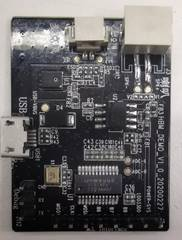
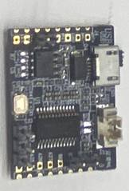

|
蜂鸟M离线方案开发指导手册
v1.0.4
|
蜂鸟M芯片采用高性能32位RISC内核，最高频率240MHz，支持DSP指令，集成FPU支持浮点运算，通过神经网络对音频信号进行训练学习，提高语音信号的识别能力。
蜂鸟M芯片具有丰富的系统外设，包括 UART, I2C, SPI, PWM, RTC, Timer, ADC, DAC等，是一款低功耗高性能，主控级别的离线语音识别芯片。
|
蜂鸟M芯片通用A板 |
蜂鸟M芯片通用B板 |
|
 |
 |
蜂鸟M芯片与通用demo板
蜂鸟M芯片主要特性：
|
配置 |
规格 |
|
蜂鸟M芯片 |
高速SRAM |
|
FLASH 2MB |
|
|
mic数量 |
1 |
|
UART通信接口 |
1 |
|
LED接口 |
有 |
|
音频接口 |
I2S, ADC, DAC |
|
控制接口 |
UART, GPIO, I2C, SPI, PWM, ADC, DAC等 |
|
序号 |
功能 |
功能描述 |
|
1 |
单麦拾音 |
· 单麦克风方案 · 支持家居场景5m远讲 |
|
2 |
语音唤醒 |
· 高性能唤醒引擎 · 低功耗 · 支持带口音的普通话 · 低误唤醒率 (< 1 false in 48 hours) |
|
3 |
离线识别 |
· 支持本地150条控制指令识别 |
|
4 |
多轮对话 |
一次唤醒连续对话，语音操作更加便捷自然。 |
|
5 |
多种发音人音色 |
· 提供标准女声、甜美女声、可爱女声、台湾女声、标准男声、女童声、男童声七种音色可选 |
|
6 |
UART主板对接 |
云知声提供标准UART协议，也支持对接用户自有协议 |
|
7 |
智能设备平台 |
云知声设备平台提供：唤醒词自定义，命令词自定义，回复播报语自定义，个性化声学模型，发音人音色选择等产品自定义配置 |